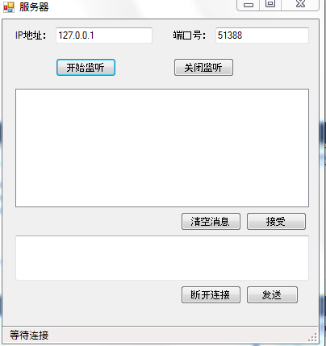

基于TCP协议的简单通信程序
简介
TCP是一种面向连接的，可靠的，基于字节流的传输层通信协议。TCP的工作过程可以分为三个阶段：
一、连接的建立——TCP的连接建立就像打电话一样， 我们打电话时，拨一个号码的号码并不是立即就可以接通的，期间会有一个“嘟 嘟”的呼叫过程， 这就好比是TCP协议的连接的建立阶段。当我们用TCP编写的程序，必须先建立TCP连接。TCP协议的连接建立通过三次握手来完成的。
第一次握手：建立连接时，客户端发送SYN包（seq=x）到服务器，并进入SYN_Send状态，等待服务器确认
第二次握手：服务器收到SYN包，必须确认客户的SYN（ACK=x+1），同时自己也发送一个SYN包（SEQ=y），即SYN+ACK包，此时服务器进入SYN_Recv状态
第三次握手：客户端收到服务器的SYN+ACK包，向服务器发送确认包ACK（ACK=y+1）,此包发送完毕，客户端和服务器进入Established(建立)状态，完成三次握手。
二、传输数据——利用TCP传输数据时，数据是以字节流的形式进行传输，客户端与服务器端建立连接后，发送方需要先将发送的数据转换为字节流，然后将其发送给对方，发送数据时，可以通过程序不断地将数据流陆续写入TCP的发送缓冲中，然后TCP自动从发送缓冲中提取一定量的数据，将其组成TCP报文段发送到IP层，再通过IP层（也就是网络层）之下的网络接口发送出去；接受端从IP层接收到TCP报文段后，将其暂时保存在接受缓冲中，然后我们通过程序依次读取接受缓冲中的数据，从而达到相互通信的目的
三、断开连接——发送完数据之后，最后就是断开连接了。
运行示例
步骤一、启动服务器然后点开始监听，此时线程会堵塞，直到接受到一个连接请求为止

步骤二、运行客户端，在IP地址和端口处输入服务器端的IP地址和端口号，点击连接服务器按钮后的界面如下：

步骤三、通过接受按钮和发送按钮来实现双方的通信，实现界面如下：

使用代码
步骤一、服务器端接受开始监听客户端请求的代码：
// 开始监听
private void btnStart_Click(object sender, EventArgs e)
{
tcpLister = new TcpListener(ipaddress,Port);
tcpLister.Start();
// 启动一个线程来接受请求
Thread acceptThread =new Thread(acceptClientConnect);
acceptThread.Start();
}
// 接受请求
private void acceptClientConnect()
{
statusStripInfo.Invoke(showStatusCallBack,"正在监听");
Thread.Sleep(1000);
try
{
statusStripInfo.Invoke(showStatusCallBack,"等待连接");
tcpClient = tcpLister.AcceptTcpClient();
if (tcpLister != null)
{
statusStripInfo.Invoke(showStatusCallBack,"接受到连接");
networkStream = tcpClient.GetStream();
reader = new BinaryReader(networkStream);
writer = new BinaryWriter(networkStream);
}
}
catch
{
statusStripInfo.Invoke(showStatusCallBack, "停止监听");
Thread.Sleep(1000);
statusStripInfo.Invoke(showStatusCallBack, "就绪");
}
}
// 开始监听 private void btnStart_Click(object sender, EventArgs e) { tcpLister = new TcpListener(ipaddress,Port); tcpLister.Start(); // 启动一个线程来接受请求 Thread acceptThread =new Thread(acceptClientConnect); acceptThread.Start(); } // 接受请求 private void acceptClientConnect() { statusStripInfo.Invoke(showStatusCallBack,"正在监听"); Thread.Sleep(1000); try { statusStripInfo.Invoke(showStatusCallBack,"等待连接"); tcpClient = tcpLister.AcceptTcpClient(); if (tcpLister != null) { statusStripInfo.Invoke(showStatusCallBack,"接受到连接"); networkStream = tcpClient.GetStream(); reader = new BinaryReader(networkStream); writer = new BinaryWriter(networkStream); } } catch { statusStripInfo.Invoke(showStatusCallBack, "停止监听"); Thread.Sleep(1000); statusStripInfo.Invoke(showStatusCallBack, "就绪"); } }
private void btnConnect_Click(object sender, EventArgs e)
{
// 通过一个线程发起请求,多线程
Thread connectThread = new Thread(ConnectToServer);
connectThread.Start();
}
// 连接服务器方法,建立连接的过程
private void ConnectToServer()
{
try
{
// 调用委托
statusStripInfo.Invoke(showStatusCallBack, "正在连接...");
if (tbxserverIp.Text == string.Empty || tbxPort.Text == string.Empty)
{
MessageBox.Show("请先输入服务器的IP地址和端口号");
}
IPAddress ipaddress = IPAddress.Parse(tbxserverIp.Text);
tcpClient = new TcpClient();
tcpClient.Connect(ipaddress, int.Parse(tbxPort.Text));
// 延时操作
Thread.Sleep(1000);
if (tcpClient != null)
{
statusStripInfo.Invoke(showStatusCallBack, "连接成功");
networkStream = tcpClient.GetStream();
reader = new BinaryReader(networkStream);
writer =new BinaryWriter(networkStream);
}
}
catch
{
statusStripInfo.Invoke(showStatusCallBack,"连接失败");
Thread.Sleep(1000);
statusStripInfo.Invoke(showStatusCallBack,"就绪");
}
}
private void btnConnect_Click(object sender, EventArgs e) { // 通过一个线程发起请求,多线程 Thread connectThread = new Thread(ConnectToServer); connectThread.Start(); } // 连接服务器方法,建立连接的过程 private void ConnectToServer() { try { // 调用委托 statusStripInfo.Invoke(showStatusCallBack, "正在连接..."); if (tbxserverIp.Text == string.Empty || tbxPort.Text == string.Empty) { MessageBox.Show("请先输入服务器的IP地址和端口号"); } IPAddress ipaddress = IPAddress.Parse(tbxserverIp.Text); tcpClient = new TcpClient(); tcpClient.Connect(ipaddress, int.Parse(tbxPort.Text)); // 延时操作 Thread.Sleep(1000); if (tcpClient != null) { statusStripInfo.Invoke(showStatusCallBack, "连接成功"); networkStream = tcpClient.GetStream(); reader = new BinaryReader(networkStream); writer =new BinaryWriter(networkStream); } } catch { statusStripInfo.Invoke(showStatusCallBack,"连接失败"); Thread.Sleep(1000); statusStripInfo.Invoke(showStatusCallBack,"就绪"); } }
// 发送消息
private void btnSend_Click(object sender, EventArgs e)
{
Thread sendThread = new Thread(SendMessage);
sendThread.Start(tbxMessage.Text);
}
private void SendMessage(object state)
{
statusStripInfo.Invoke(showStatusCallBack, "正在发送...");
try
{
writer.Write(state.ToString());
Thread.Sleep(5000);
writer.Flush();
statusStripInfo.Invoke(showStatusCallBack, "完毕");
tbxMessage.Invoke(resetMessageCallBack, null);
lstbxMessageView.Invoke(showMessageCallback, state.ToString());
}
catch
{
if (reader != null)
{
reader.Close();
}
if (writer != null)
{
writer.Close();
}
if (tcpClient != null)
{
tcpClient.Close();
}
statusStripInfo.Invoke(showStatusCallBack, "断开了连接");
}
}
// 发送消息 private void btnSend_Click(object sender, EventArgs e) { Thread sendThread = new Thread(SendMessage); sendThread.Start(tbxMessage.Text); } private void SendMessage(object state) { statusStripInfo.Invoke(showStatusCallBack, "正在发送..."); try { writer.Write(state.ToString()); Thread.Sleep(5000); writer.Flush(); statusStripInfo.Invoke(showStatusCallBack, "完毕"); tbxMessage.Invoke(resetMessageCallBack, null); lstbxMessageView.Invoke(showMessageCallback, state.ToString()); } catch { if (reader != null) { reader.Close(); } if (writer != null) { writer.Close(); } if (tcpClient != null) { tcpClient.Close(); } statusStripInfo.Invoke(showStatusCallBack, "断开了连接"); } }
更多信息
TcpClient Class
http://msdn.microsoft.com/zh-cn/library/system.net.sockets.tcpclient.aspx
TcpListener 类
http://msdn.microsoft.com/zh-cn/library/system.net.sockets.tcplistener.aspx